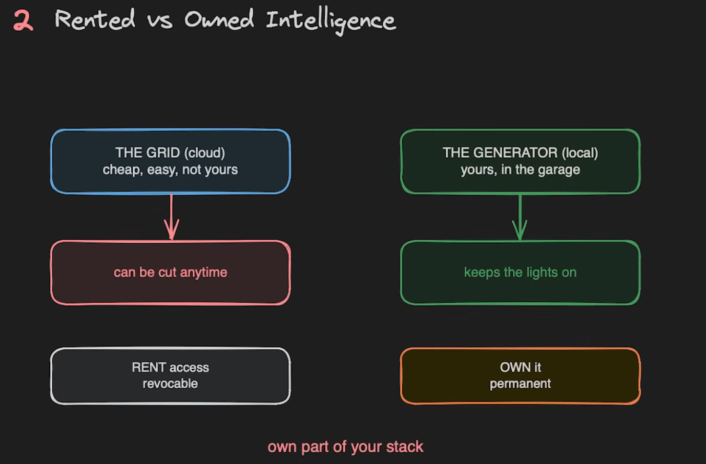
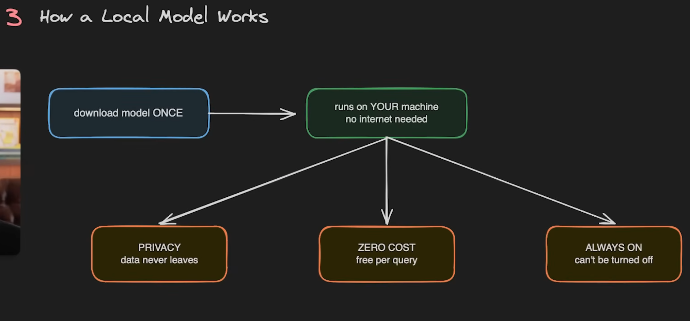
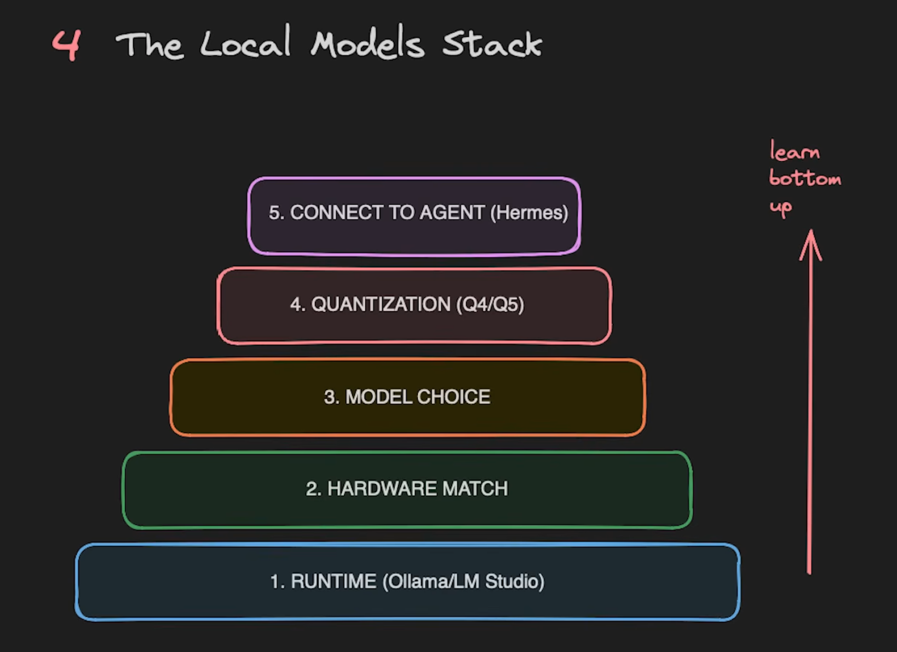
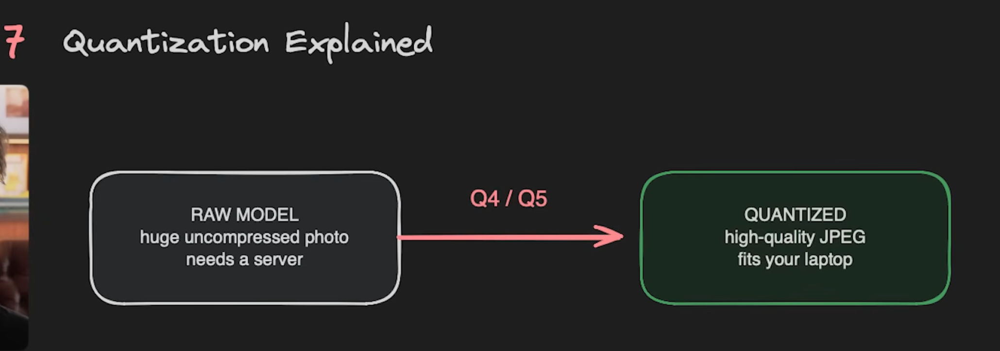
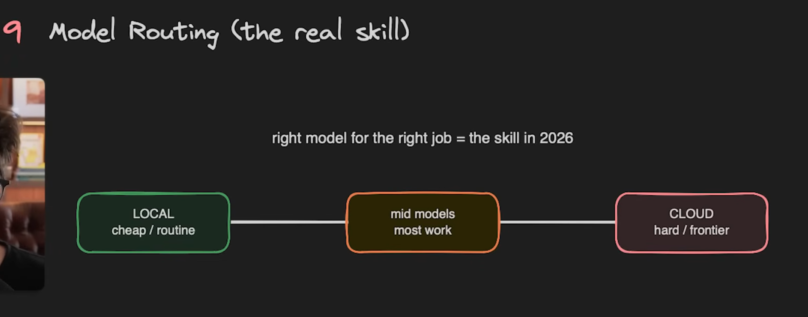
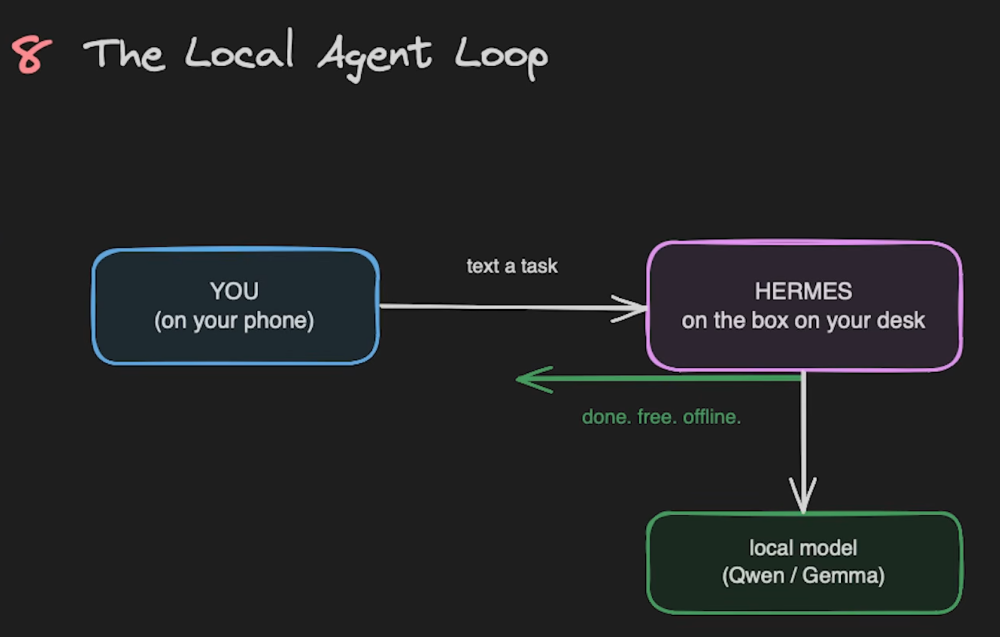

AI models that run on hardware you control, shifting routine inference from rented cloud intelligence to owned, private, offline-capable systems.
The local-model source contrasts rented cloud intelligence with owned local intelligence. Cloud models provide frontier capability and managed serving. Local models provide privacy, offline access, zero per-query marginal cost, and stronger control over the stack.
| Access pattern | Upside | Risk |
|---|---|---|
| Rented cloud intelligence | Frontier capability, managed serving | API cost, outage risk, privacy exposure |
| Owned local intelligence | Privacy, offline access, no per-query fee | Hardware limits, setup burden, smaller models |


This makes local inference useful for drafts, classification, summarization, embeddings, structured extraction, coding-agent side tasks, and routine agent loops.
| Layer | Decision |
|---|---|
| Runtime | Ollama, LM Studio, or another local serving layer |
| Hardware match | Pick model size and quantization that fit RAM, VRAM, and latency needs |
| Model choice | Select the family based on task fit |
| Quantization | Use compressed weights when full precision is too large |
| Agent connection | Connect the runtime to a local harness or tool loop |

| Model size | Source guidance |
|---|---|
| 4B | Any laptop or phone class device |
| 12B | 16 GB RAM sweet spot |
| 27B-35B | 32 GB+ RAM or GPU |
| 70B+ | High-end workstation class hardware |
Quantization is the compression tool that makes many local setups possible: a smaller representation loses some precision but can fit available memory and improve throughput.

| Route | Best for |
|---|---|
| Local cheap route | Private notes, simple classification, extraction, drafts, offline work |
| Mid-model route | Routine coding, longer summarization, medium reasoning |
| Cloud hard route | Frontier reasoning, hard debugging, high-stakes synthesis |

The local-agent setup connects a user device to a desktop agent harness, then to local models such as Qwen or Gemma. The value is local, repeatable execution: an agent can read files, call tools, use a local model for cheap substeps, and reserve cloud calls for cases where capability matters more than privacy or cost.
